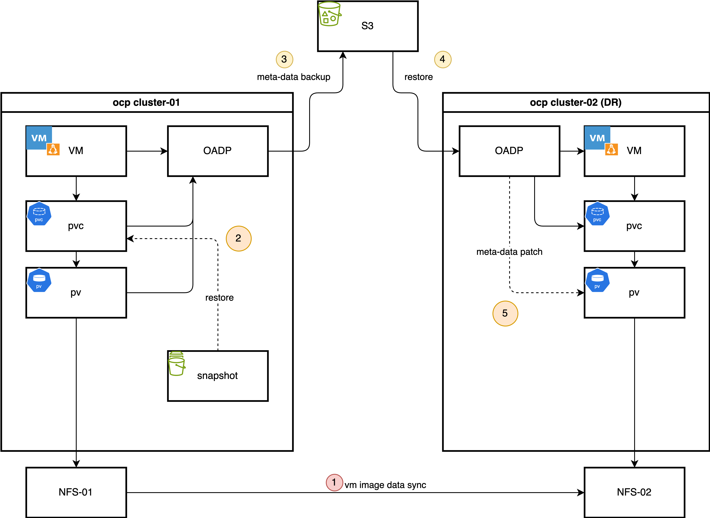
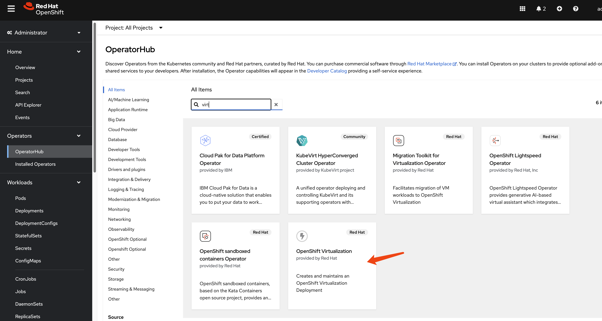
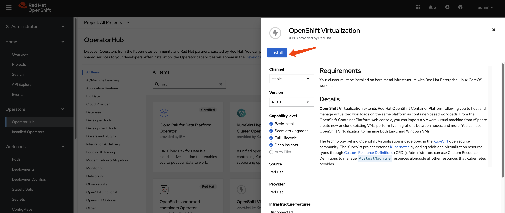
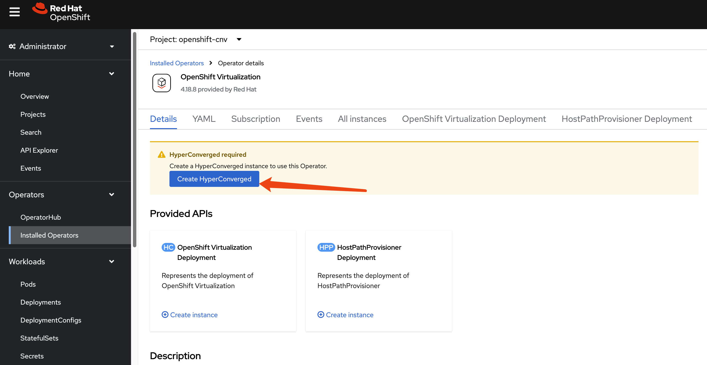
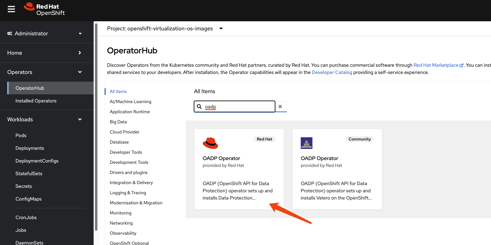
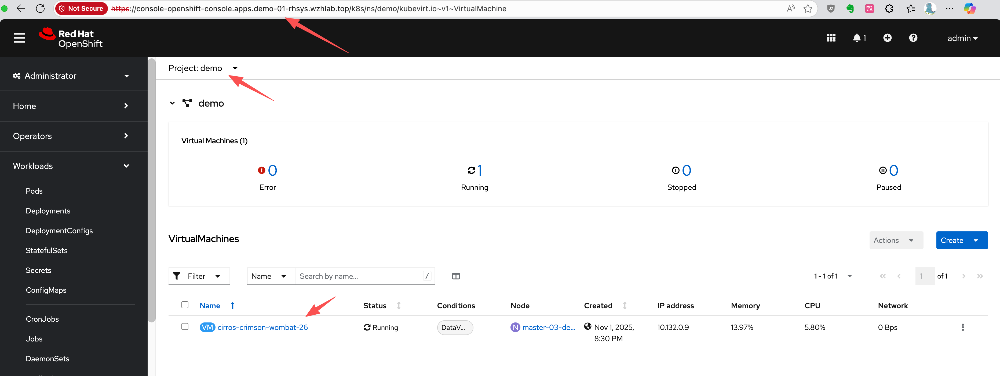
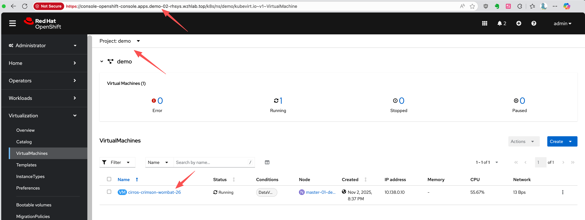

[!NOTE] This document outlines a proof-of-concept for a disaster recovery solution for OpenShift Virtualization. The procedures and scripts are intended for demonstration and require adaptation for production environments.
OpenShift Virtualization Disaster Recovery with Storage Replication and OADP Plugins
1. Introduction and Strategy
The Challenge: Native DR Gaps in OpenShift Virtualization
Red Hat OpenShift Virtualization (OCP-V) is a powerful platform for running virtual machines alongside containers, but it does not include a native, built-in disaster recovery (DR) solution. The official recommendation from Red Hat is to leverage the DR capabilities of OpenShift Data Foundation (ODF), which provides robust, integrated disaster recovery mechanisms. ODF is typically backed by Ceph or IBM Flash Storage, offering a tightly integrated ecosystem.
However, many enterprise environments have standardized on third-party storage solutions from vendors like Dell, EMC, or Hitachi. In these heterogeneous storage scenarios, a different approach is required to implement a reliable and efficient DR strategy for virtual machines running on OpenShift Virtualization.
Our Solution: A Hybrid Approach with OADP and Storage Replication
This document details a DR strategy that combines the strengths of OpenShift’s native backup tools with the power of underlying storage replication. This hybrid model optimizes for both speed and consistency. The core components of this solution are:
OpenShift API for Data Protection (OADP): We use OADP (based on the upstream Velero project) to perform metadata-only backups. This captures the essential Kubernetes and OpenShift Virtualization object configurations, such as Virtual Machine (VM) specifications, Persistent Volume Claims (PVCs), and other related resources. We deliberately exclude the actual volume data from the OADP backup to avoid the time-consuming process of data compression, transfer to S3, and decompression during restore.
Storage-Level Replication: The actual VM disk data, contained within Persistent Volumes (PVs), is replicated from the primary site to the DR site using the storage array’s native remote replication capabilities. This method is highly efficient and significantly faster for large volumes compared to OADP’s file-based data movers.
Custom OADP Plugins: To bridge the gap between the metadata backup and the physically replicated storage, we employ two custom plugins:
- Snapshot-to-PVC Plugin (Backup Time): Since some storage systems (like the Hitachi model in our use case) do not support replicating snapshots directly, this plugin activates during the backup process. It creates a new PVC from a volume snapshot, effectively materializing the snapshot as a replicable volume. This new PVC is then included in the OADP metadata backup.
- PV Patching Plugin (Restore Time): During a restore at the DR site, this plugin intercepts the PersistentVolume objects. It dynamically modifies their definitions—for example, by changing storage server IPs or volume paths—to match the configuration of the DR site’s storage infrastructure. This ensures that the restored PVs can correctly map to the replicated storage LUNs.
The Daily Backup Process
In a typical operational cycle, the primary site performs automated backups at a regular interval (e.g., once per hour).
- Metadata Backup Initiation: OADP triggers a scheduled backup of all specified Kubernetes object metadata and stores it in an S3-compatible object store.
- Snapshot-to-PVC Promotion: The custom plugin identifies volume snapshots associated with the VMs being backed up. For each snapshot, it creates a new, corresponding PVC. This new PVC is instantly provisioned from the snapshot’s data.
- Inclusion of New PVCs/PVs: The OADP backup process continues, adding the newly created PVCs and their associated PVs to the metadata backup set. This ensures the backup contains a complete, consistent, and replicable state of the application.
The Failover Process
In the event of a disaster at the primary site, a manual or automated failover process is initiated:
- Quiesce Primary Site: VMs at the primary site are shut down, and the underlying storage volumes are set to a read-only state to ensure data consistency.
- Finalize Storage Synchronization: The storage replication is finalized to ensure the DR site has the latest consistent copy of the data.
- Present Storage at DR Site: The replicated volumes (LUNs or NFS shares) are made available and presented to the DR OpenShift cluster.
- Restore Metadata with PV Patching: The OADP metadata backup is restored to the DR cluster. During this process, the custom PV patching plugin automatically modifies the PV definitions to point to the correct storage resources at the DR site.
- Start VMs: With the metadata restored and the storage correctly mapped, the virtual machines can be started on the DR cluster, resuming operations.
The process for failing back from the DR site to the primary site follows the same logic in reverse.
This document uses a simple NFS storage backend to simulate the process, first demonstrating the manual steps and then outlining a path toward full automation using Ansible.

2. Prerequisites: Operator Installation
Provisioning the NFS CSI Driver
For demonstration purposes, we will use the NFS CSI driver as the storage backend.
First, deploy the NFS CSI driver to your cluster.
curl -skSL https://raw.githubusercontent.com/kubernetes-csi/csi-driver-nfs/v4.12.1/deploy/install-driver.sh | bash -s v4.12.1 --Next, create the StorageClass and
VolumeSnapshotClass.
[!NOTE] The
reclaimPolicymust be set toRetain. Otherwise, the OADP plugin for PV modification will not be triggered during the restore process.
apiVersion: storage.ks.io/v1
kind: StorageClass
metadata:
name: nfs-csi
annotations:
storageclass.kubernetes.io/is-default-class: "true"
provisioner: nfs.csi.k8s.io
parameters:
server: 192.168.99.1
share: /openshift-01
reclaimPolicy: Retain # Must be Retain for this DR strategy
volumeBindingMode: Immediate
allowVolumeExpansion: true
mountOptions:
- hard
- nfsvers=4.2 # Recommended to use NFSv4
- rsize=1048576 # Increasing read/write block size can improve performance
- wsize=1048576
- noatime
- nodiratime
- actimeo=60 # Cache attributes for 60 seconds
# --- Lock and timeout optimizations to handle "lost lock" issues ---
- timeo=600 # Timeout in tenths of a second (600 = 60s). Increases tolerance for network latency.
- retrans=3 # Number of retransmissions.
---
apiVersion: snapshot.storage.k8s.io/v1
kind: VolumeSnapshotClass
metadata:
name: nfs-csi-snapclass
driver: nfs.csi.k8s.io
deletionPolicy: DeleteInstall OpenShift Virtualization
This guide focuses on the disaster recovery of virtual
machines, so the OpenShift Virtualization operator
is a primary requirement. Install it from the OperatorHub in
your OpenShift cluster.



Install OADP Operator
We use the
OpenShift API for Data Protection (OADP) operator
for metadata backup and restore. Install the OADP operator on
both the primary (cluster-01) and DR
(cluster-02) clusters.

Next, configure a Kubernetes Secret containing
the credentials for your S3-compatible object storage bucket,
which will store the metadata backups.
# Create a credentials file for MinIO or any S3-compatible storage
cat << EOF > $BASE_DIR/data/install/credentials-minio
[default]
aws_access_key_id = rustfsadmin
aws_secret_access_key = rustfsadmin
EOF
# Create the secret in the openshift-adp namespace
oc create secret generic minio-credentials \
--from-file=cloud=$BASE_DIR/data/install/credentials-minio \
-n openshift-adpFinally, create a DataProtectionApplication
(DPA) custom resource. This configures the OADP instance,
specifying the S3 backup location and enabling the necessary
plugins for OpenShift, KubeVirt, CSI, and our custom DR
logic.
# Define the OADP instance (DataProtectionApplication)
cat << EOF > $BASE_DIR/data/install/oadp.yaml
apiVersion: oadp.openshift.io/v1alpha1
kind: DataProtectionApplication
metadata:
name: velero-instance
namespace: openshift-adp
spec:
# 1. Define the S3 backup storage location
backupLocations:
- name: default
velero:
provider: aws
default: true
objectStorage:
bucket: ocp
prefix: velero # Backups will be stored under the 'velero/' prefix
config:
# For non-AWS S3, provide the endpoint URL
s3Url: http://192.168.99.1:9001
region: us-east-1
# Reference the secret containing S3 credentials
credential:
name: minio-credentials
key: cloud
# 2. Configure Velero plugins and features
configuration:
nodeAgent:
enable: true
uploaderType: kopia
velero:
# Enable default plugins for OpenShift, KubeVirt, CSI, and AWS
defaultPlugins:
- openshift
- kubevirt
- csi
- aws
featureFlags:
- EnableCSI
customPlugins: # Add custom plugins
# This plugin will patch the PV during OADP restore
- name: csi-volume-dr # A unique name for the plugin
image: quay.io/wangzheng422/qimgs:velero-plugin-oadp-dr-2025.11.05-v01
# This plugin will restore a PVC from a snapshot during OADP backup
- name: snapshot-dr # A unique name for the plugin
image: quay.io/wangzheng422/qimgs:velero-plugin-snapshot-2025.11.12-v01
# 3. Volume snapshot and data mover configuration is not needed for this metadata-only strategy
# csi:
# enable: false
# datamover:
# enable: false
EOF
oc apply -f $BASE_DIR/data/install/oadp.yamlAs you can see, we use two custom OADP plugins:
1. PV
Patching Plugin
(velero-plugin-oadp-dr)
The source code is available here: https://github.com/wangzheng422/openshift-velero-plugin/blob/wzh-oadp-1.5/velero-plugins-wzhlab-top-pv-patch/modify-pv-handle.go
This plugin activates during a restore operation. It reads a
ConfigMap named
velero-plugin-regex-map which contains rules for
finding and replacing strings within PV definitions. This allows
it to dynamically adapt PVs to the DR site’s storage
environment.
Here is an example of the
velero-plugin-regex-map ConfigMap
configuration:
apiVersion: v1
kind: ConfigMap
metadata:
# The ConfigMap must be created in the Velero installation namespace
namespace: openshift-adp
name: velero-plugin-regex-map
data:
# --- Rule 1: Modify volumeHandle ---
# path: Specifies the complete path to the field to be modified
rule1.path: "spec.csi.volumeHandle"
# find: Regular expression used for searching
rule1.find: "openshift-01"
# replace: Target string to replace with. You can use $1, $2, etc. to reference regex capture groups
rule1.replace: "openshift-02"
# --- Rule 2: Modify volumeAttributes.share ---
rule2.path: "spec.csi.volumeAttributes.share"
rule2.find: "openshift-01"
rule2.replace: "openshift-02"
# --- You can continue adding more rules as needed ---
# rule3.path: "..."
# rule3.find: "..."
# rule3.replace: "..."Configuration Parameters Explained:
path: The JSON path to the field within the PersistentVolume specification that needs to be modified. Common paths include:spec.csi.volumeHandle- The CSI volume identifierspec.csi.volumeAttributes.share- NFS share pathspec.csi.volumeAttributes.server- Storage server address
find: A regular expression pattern to match the value that needs to be replaced. This supports standard regex syntax, allowing for complex pattern matching.replace: The replacement string. You can use capture groups from thefindregex (e.g.,$1,$2) to preserve parts of the original value.
Example Use Cases:
- Changing NFS server paths: Replace
/openshift-01with/openshift-02in the share path - Updating server IPs: Replace
192.168.1.100with192.168.2.100in volumeHandle - Modifying storage array identifiers: Update LUN IDs or volume identifiers for different storage systems
The plugin processes these rules sequentially during the restore operation, applying each transformation to the PersistentVolume objects before they are created in the DR cluster.
The logic is as follows:
flowchart TD
subgraph Initialization and Rule Loading
A[Start PV Restore Process] --> B{Fetch velero-plugin-regex-map<br/>ConfigMap};
B -- "Success" --> C{Parse ConfigMap<br/>Extract Replacement Rules};
B -- "Failure" --> D[Log Error and Skip Modification];
C -- "No Valid Rules" --> E[Log Warning and Skip Modification];
C -- "Rules Parsed" --> F[Get Current PV Spec Content];
end
subgraph Rule Application Loop
F --> G{Iterate Through All Rules};
G -- "Loop Start" --> H{Find Value in PV Spec<br/>Based on Rule Path};
H -- "Not Found or Path Error" --> I[Skip Current Rule];
H -- "Value Found" --> J{Compile 'find' Regex from Rule};
J -- "Compilation Failed" --> I;
J -- "Compilation Succeeded" --> K{Check if Field Value Matches Regex};
K -- "No Match" --> I;
K -- "Match" --> L[Perform Replacement<br/>Generate New Value];
L --> M{Update Field in PV Spec};
M -- "Update Failed" --> I;
M -- "Update Succeeded" --> N[Mark PV as Modified];
I --> O{Are there more rules?};
N --> O;
O -- "Yes" --> G;
end
subgraph Finalization
G -- "Loop End" --> O;
O -- "No" --> P[Log Final Modification Status of PV];
P --> Q[Complete<br/>Return PV Object];
D --> Q;
E --> Q;
end
style D fill:#FADBD8,stroke:#C0392B
style E fill:#FEF9E7,stroke:#F1C40F
style Q fill:#D5F5E3,stroke:#27AE602.
Snapshot-to-PVC Plugin
(velero-plugin-snapshot)
The source code is available here: https://github.com/wangzheng422/openshift-velero-plugin/blob/wzh-odap-1.5-snapshot/velero-plugins-wzhlab-top-restore-pvc-from-snapshot/create-pvc-from-snapshot.go
This plugin activates during a backup operation. It scans for
VolumeSnapshot objects. If a snapshot is found, the
plugin creates a new PVC that restores data from that snapshot.
It then waits for the new PVC to become bound to a PV. This is
essential for storage systems like Hitachi that do not support
replicating snapshots directly.
The logic of this plugin is as follows:
flowchart TD
subgraph "Initialization"
A[Velero Backs Up a VolumeSnapshot]
end
subgraph "Snapshot Pre-processing"
B{Does Snapshot Have a Source PVC?}
A --> B
B -- "No" --> C[Skip This Snapshot]
B -- "Yes" --> D[Get Source PVC Name]
end
subgraph "Source PVC Validation"
E{Does Source PVC Exist?}
D --> E
E -- "No" --> F[Log Warning and Skip]
E -- "Yes" --> G[Read Source PVC Configuration<br/>AccessModes, Resources, etc.]
end
subgraph "Create New PVC"
H[Define New PVC Object<br/>Based on Source PVC and Snapshot]
G --> H
I{Create New PVC API Call}
H --> I
I -- "Failure" --> J[Log Error and Skip]
I -- "Success" --> K[New PVC Created Successfully]
end
subgraph "Wait for PVC to Bind"
L[Poll New PVC Status]
K --> L
M{Is PVC Status 'Bound'?}
L --> M
M -- "No, Status is 'Pending'" --> L
M -- "Timeout or Error" --> N[Log Error and Skip]
M -- "Yes" --> O[PVC Successfully Bound]
end
subgraph "Completion"
P[Add the Newly Created PVC<br/>to the Backup Resource List]
O --> P
Q[Back Up Original VolumeSnapshot<br/>and the New PVC]
P --> Q
R[End]
Q --> R
C --> R
F --> R
J --> R
N --> R
end
style A fill:#D6EAF8,stroke:#3498DB
style Q fill:#D5F5E3,stroke:#2ECC71
style R fill:#D5F5E3,stroke:#2ECC71
style C fill:#FADBD8,stroke:#E74C3C
style F fill:#FADBD8,stroke:#E74C3C
style J fill:#FADBD8,stroke:#E74C3C
style N fill:#FADBD8,stroke:#E74C3C3. Verifying Plugin Registration
After deploying the DataProtectionApplication
resource with the custom plugin images, it is essential to
verify that Velero has successfully loaded and registered them.
This confirmation step ensures that both the default OADP
plugins and our two custom plugins (csi-volume-dr
and snapshot-dr) are active and ready to
participate in the backup and restore workflows.
To list all currently active plugins, you can execute the following command inside the Velero pod. For convenience, we first create a shell alias.
# Create a temporary alias for easier access to the Velero CLI
alias velero='oc -n openshift-adp exec deployment/velero -c velero -it -- ./velero'
# List all registered plugins
velero get plugins
# NAME KIND
# kubevirt-velero-plugin/backup-datavolume-action BackupItemAction
# kubevirt-velero-plugin/backup-datavolume-action BackupItemAction
# kubevirt-velero-plugin/backup-virtualmachine-action BackupItemAction
# kubevirt-velero-plugin/backup-virtualmachine-action BackupItemAction
# kubevirt-velero-plugin/backup-virtualmachineinstance-action BackupItemAction
# kubevirt-velero-plugin/backup-virtualmachineinstance-action BackupItemAction
# openshift.io/01-common-backup-plugin BackupItemAction
# openshift.io/01-common-backup-plugin BackupItemAction
# openshift.io/02-serviceaccount-backup-plugin BackupItemAction
# openshift.io/02-serviceaccount-backup-plugin BackupItemAction
# openshift.io/03-pv-backup-plugin BackupItemAction
# openshift.io/03-pv-backup-plugin BackupItemAction
# openshift.io/04-imagestreamtag-backup-plugin BackupItemAction
# openshift.io/04-imagestreamtag-backup-plugin BackupItemAction
# openshift.io/07-pod-backup-plugin BackupItemAction
# openshift.io/07-pod-backup-plugin BackupItemAction
# openshift.io/08-deploymentconfig-backup-plugin BackupItemAction
# openshift.io/08-deploymentconfig-backup-plugin BackupItemAction
# openshift.io/09-replicationcontroller-backup-plugin BackupItemAction
# openshift.io/09-replicationcontroller-backup-plugin BackupItemAction
# openshift.io/19-is-backup-plugin BackupItemAction
# openshift.io/19-is-backup-plugin BackupItemAction
# openshift.io/25-configmap-backup-plugin BackupItemAction
# openshift.io/25-configmap-backup-plugin BackupItemAction
# velero.io/crd-remap-version BackupItemAction
# velero.io/crd-remap-version BackupItemAction
# velero.io/pod BackupItemAction
# velero.io/pod BackupItemAction
# velero.io/pv BackupItemAction
# velero.io/pv BackupItemAction
# velero.io/service-account BackupItemAction
# velero.io/service-account BackupItemAction
# wzhlab.top/create-pvc-from-snapshot-action BackupItemAction
# wzhlab.top/create-pvc-from-snapshot-action BackupItemAction
# velero.io/csi-pvc-backupper BackupItemActionV2
# velero.io/csi-volumesnapshot-backupper BackupItemActionV2
# velero.io/csi-volumesnapshotclass-backupper BackupItemActionV2
# velero.io/csi-volumesnapshotcontent-backupper BackupItemActionV2
# velero.io/csi-volumesnapshot-delete DeleteItemAction
# velero.io/csi-volumesnapshotcontent-delete DeleteItemAction
# velero.io/dataupload-delete DeleteItemAction
# velero.io/aws ObjectStore
# kubevirt-velero-plugin/restore-pod-action RestoreItemAction
# kubevirt-velero-plugin/restore-pod-action RestoreItemAction
# kubevirt-velero-plugin/restore-pvc-action RestoreItemAction
# kubevirt-velero-plugin/restore-pvc-action RestoreItemAction
# kubevirt-velero-plugin/restore-vm-action RestoreItemAction
# kubevirt-velero-plugin/restore-vm-action RestoreItemAction
# kubevirt-velero-plugin/restore-vmi-action RestoreItemAction
# kubevirt-velero-plugin/restore-vmi-action RestoreItemAction
# openshift.io/01-common-restore-plugin RestoreItemAction
# openshift.io/01-common-restore-plugin RestoreItemAction
# openshift.io/02-serviceaccount-restore-plugin RestoreItemAction
# openshift.io/02-serviceaccount-restore-plugin RestoreItemAction
# openshift.io/03-pv-restore-plugin RestoreItemAction
# openshift.io/03-pv-restore-plugin RestoreItemAction
# openshift.io/04-pvc-restore-plugin RestoreItemAction
# openshift.io/04-pvc-restore-plugin RestoreItemAction
# openshift.io/05-route-restore-plugin RestoreItemAction
# openshift.io/05-route-restore-plugin RestoreItemAction
# openshift.io/06-build-restore-plugin RestoreItemAction
# openshift.io/06-build-restore-plugin RestoreItemAction
# openshift.io/07-pod-restore-plugin RestoreItemAction
# openshift.io/07-pod-restore-plugin RestoreItemAction
# openshift.io/08-deploymentconfig-restore-plugin RestoreItemAction
# openshift.io/08-deploymentconfig-restore-plugin RestoreItemAction
# openshift.io/09-replicationcontroller-restore-plugin RestoreItemAction
# openshift.io/09-replicationcontroller-restore-plugin RestoreItemAction
# openshift.io/10-job-restore-plugin RestoreItemAction
# openshift.io/10-job-restore-plugin RestoreItemAction
# openshift.io/11-daemonset-restore-plugin RestoreItemAction
# openshift.io/11-daemonset-restore-plugin RestoreItemAction
# openshift.io/12-replicaset-restore-plugin RestoreItemAction
# openshift.io/12-replicaset-restore-plugin RestoreItemAction
# openshift.io/13-deployment-restore-plugin RestoreItemAction
# openshift.io/13-deployment-restore-plugin RestoreItemAction
# openshift.io/14-statefulset-restore-plugin RestoreItemAction
# openshift.io/14-statefulset-restore-plugin RestoreItemAction
# openshift.io/15-service-restore-plugin RestoreItemAction
# openshift.io/15-service-restore-plugin RestoreItemAction
# openshift.io/16-cronjob-restore-plugin RestoreItemAction
# openshift.io/16-cronjob-restore-plugin RestoreItemAction
# openshift.io/17-buildconfig-restore-plugin RestoreItemAction
# openshift.io/17-buildconfig-restore-plugin RestoreItemAction
# openshift.io/18-secret-restore-plugin RestoreItemAction
# openshift.io/18-secret-restore-plugin RestoreItemAction
# openshift.io/19-is-restore-plugin RestoreItemAction
# openshift.io/19-is-restore-plugin RestoreItemAction
# openshift.io/20-SCC-restore-plugin RestoreItemAction
# openshift.io/20-SCC-restore-plugin RestoreItemAction
# openshift.io/21-role-bindings-restore-plugin RestoreItemAction
# openshift.io/21-role-bindings-restore-plugin RestoreItemAction
# openshift.io/22-cluster-role-bindings-restore-plugin RestoreItemAction
# openshift.io/22-cluster-role-bindings-restore-plugin RestoreItemAction
# openshift.io/23-imagetag-restore-plugin RestoreItemAction
# openshift.io/23-imagetag-restore-plugin RestoreItemAction
# openshift.io/24-horizontalpodautoscaler-restore-plugin RestoreItemAction
# openshift.io/24-horizontalpodautoscaler-restore-plugin RestoreItemAction
# openshift.io/25-configmap-restore-plugin RestoreItemAction
# openshift.io/25-configmap-restore-plugin RestoreItemAction
# velero.io/add-pv-from-pvc RestoreItemAction
# velero.io/add-pv-from-pvc RestoreItemAction
# velero.io/add-pvc-from-pod RestoreItemAction
# velero.io/add-pvc-from-pod RestoreItemAction
# velero.io/admission-webhook-configuration RestoreItemAction
# velero.io/admission-webhook-configuration RestoreItemAction
# velero.io/apiservice RestoreItemAction
# velero.io/apiservice RestoreItemAction
# velero.io/change-image-name RestoreItemAction
# velero.io/change-image-name RestoreItemAction
# velero.io/change-pvc-node-selector RestoreItemAction
# velero.io/change-pvc-node-selector RestoreItemAction
# velero.io/change-storage-class RestoreItemAction
# velero.io/change-storage-class RestoreItemAction
# velero.io/cluster-role-bindings RestoreItemAction
# velero.io/cluster-role-bindings RestoreItemAction
# velero.io/crd-preserve-fields RestoreItemAction
# velero.io/crd-preserve-fields RestoreItemAction
# velero.io/dataupload RestoreItemAction
# velero.io/dataupload RestoreItemAction
# velero.io/init-restore-hook RestoreItemAction
# velero.io/init-restore-hook RestoreItemAction
# velero.io/job RestoreItemAction
# velero.io/job RestoreItemAction
# velero.io/pod RestoreItemAction
# velero.io/pod RestoreItemAction
# velero.io/pod-volume-restore RestoreItemAction
# velero.io/pod-volume-restore RestoreItemAction
# velero.io/role-bindings RestoreItemAction
# velero.io/role-bindings RestoreItemAction
# velero.io/secret RestoreItemAction
# velero.io/secret RestoreItemAction
# velero.io/service RestoreItemAction
# velero.io/service RestoreItemAction
# velero.io/service-account RestoreItemAction
# velero.io/service-account RestoreItemAction
# wzhlab.top/modify-csi-volume-handle-action RestoreItemAction
# wzhlab.top/modify-csi-volume-handle-action RestoreItemAction
# openshift.io/04-imagestreamtag-restore-plugin RestoreItemActionV2
# velero.io/csi-pvc-restorer RestoreItemActionV2
# velero.io/csi-volumesnapshot-restorer RestoreItemActionV2
# velero.io/csi-volumesnapshotclass-restorer RestoreItemActionV2
# velero.io/csi-volumesnapshotcontent-restorer RestoreItemActionV2
# velero.io/aws VolumeSnapshotter3. Primary Site: Performing the Backup
Assume we have a project named demo on the
primary site (cluster-01) containing a running virtual
machine.

First, let’s identify the VM and its associated PVC, PV, and VolumeSnapshot.
# Get the VM name
oc get vm -n demo
# NAME AGE STATUS READY
# cirros-crimson-wombat-26 3d20h Running True
# Get the PVC name associated with the VM
oc get vm cirros-crimson-wombat-26 -n demo -o jsonpath='{.spec.template.spec.volumes[*].dataVolume.name}' && echo
# cirros-crimson-wombat-26-volume
# Get the PV name bound to the PVC
oc get pvc cirros-crimson-wombat-26-volume -n demo -o jsonpath='{.spec.volumeName}' && echo
# pvc-7147333f-2db5-4b3f-9320-aac8da5170e2
# Get the snapshot from the vm/pvc
oc get volumesnapshot -n demo -o jsonpath='{.items[?(@.spec.source.persistentVolumeClaimName=="cirros-crimson-wombat-26-volume")].metadata.name}' && echo
# vmsnapshot-f1cafd2b-beb7-47a1-8f9c-c9c0d52569c5-volume-rootdiskNow, we create a Velero Backup object. The key
configuration here is snapshotVolumes: false, which
instructs OADP to back up only the resource definitions (YAML)
and not the data within the volumes.
cat << EOF > $BASE_DIR/data/install/oadp-backup.yaml
apiVersion: velero.io/v1
kind: Backup
metadata:
name: vm-full-metadata-backup-03
namespace: openshift-adp
spec:
# 1. Specify the namespace to back up
includedNamespaces:
- demo
# 2. Ensure cluster-scoped resources like PVs are included in the metadata backup.
# While Velero typically includes PVs linked to PVCs automatically, setting this
# to 'true' makes the behavior explicit.
includeClusterResources: true
# 3. CRITICAL: Disable Velero's native volume snapshots.
# This tells Velero to NOT create data snapshots of the PVs.
# It will only save the PV and PVC object definitions.
snapshotVolumes: false
snapshotMoveData: false
defaultVolumesToFsBackup: false
# 4. Specify the S3 storage location defined in the DPA
storageLocation: default
# 5. Set a Time-To-Live (TTL) for the backup object
ttl: 720h0m0s # 30 days
EOF
oc apply -f $BASE_DIR/data/install/oadp-backup.yamlInspecting the PVC and PV Metadata
Here is the metadata for the original PVC.
kind: PersistentVolumeClaim
apiVersion: v1
metadata:
name: cirros-crimson-wombat-26-volume
namespace: demo
# ......
spec:
accessModes:
- ReadWriteMany
resources:
requests:
storage: '235635999'
volumeName: pvc-b6d75156-0c58-422f-8bf8-6e40ed054c5d
storageClassName: nfs-csi
volumeMode: Filesystem
dataSource:
apiGroup: cdi.kubevirt.io
kind: VolumeCloneSource
name: volume-clone-source-916cf253-27ae-4f9a-8456-1e61d775206d
dataSourceRef:
apiGroup: cdi.kubevirt.io
kind: VolumeCloneSource
name: volume-clone-source-916cf253-27ae-4f9a-8456-1e61d775206d
# .....And here is the corresponding PV metadata. Note that it
points to the NFS share on /openshift-01.
kind: PersistentVolume
apiVersion: v1
metadata:
name: pvc-b6d75156-0c58-422f-8bf8-6e40ed054c5d
# ......
spec:
capacity:
storage: '235635999'
csi:
driver: nfs.csi.k8s.io
volumeHandle: 192.168.99.1#openshift-01#pvc-b6d75156-0c58-422f-8bf8-6e40ed054c5d##
volumeAttributes:
csi.storage.k8s.io/pv/name: pvc-b6d75156-0c58-422f-8bf8-6e40ed054c5d
csi.storage.k8s.io/pvc/name: tmp-pvc-43d11600-7b1c-4a3f-997c-8e99526bdd32
csi.storage.k8s.io/pvc/namespace: openshift-virtualization-os-images
server: 192.168.99.1
share: /openshift-01
storage.kubernetes.io/csiProvisionerIdentity: 1761996473487-3594-nfs.csi.k8s.io
subdir: pvc-b6d75156-0c58-422f-8bf8-6e40ed054c5d
accessModes:
- ReadWriteMany
claimRef:
namespace: demo
name: cirros-crimson-wombat-26-volume
uid: 43d11600-7b1c-4a3f-997c-8e99526bdd32
resourceVersion: '126830'
persistentVolumeReclaimPolicy: Retain
storageClassName: nfs-csi
mountOptions:
- hard
- nfsvers=4.2
- rsize=1048576
- wsize=1048576
- noatime
- nodiratime
- actimeo=60
- timeo=600
- retrans=3
volumeMode: Filesystem
# ......Verifying the New PVC Restored from Snapshot
The snapshot-to-PVC plugin creates a new PVC. Note the name, which is a concatenation of the original PVC name and the snapshot name, as defined by the plugin’s logic.
kind: PersistentVolumeClaim
apiVersion: v1
metadata:
name: cirros-crimson-wombat-26-volume-vmsnapshot-f1cafd2b-beb7-47a1-8f9c-c9c0d52569c5-volume-rootdisk
namespace: demo
# ......
spec:
accessModes:
- ReadWriteMany
resources:
requests:
storage: '235635999'
volumeName: pvc-5183c8de-817f-4d45-947c-a02ccc18d422
storageClassName: nfs-csi
volumeMode: Filesystem
dataSource:
apiGroup: snapshot.storage.k8s.io
kind: VolumeSnapshot
name: vmsnapshot-f1cafd2b-beb7-47a1-8f9c-c9c0d52569c5-volume-rootdisk
dataSourceRef:
apiGroup: snapshot.storage.k8s.io
kind: VolumeSnapshot
name: vmsnapshot-f1cafd2b-beb7-47a1-8f9c-c9c0d52569c5-volume-rootdisk
# .....Checking the OADP Plugin Logs
You can verify the plugin’s execution by checking the Velero pod logs. The logs show the plugin processing the snapshot and creating the new PVC.
oc logs -n openshift-adp -l app.kubernetes.io/name=velero --tail=-1 | grep create-pvc-from-snapshot.go
# time="2025-11-05T11:59:58Z" level=info msg="Starting CreatePvcFromSnapshotAction for VolumeSnapshot..." backup=openshift-adp/vm-full-metadata-backup-03 cmd=/plugins/velero-plugins-wzhlab-top-restore-pvc-from-snapshot logSource="/src/github.com/konveyor/openshift-velero-plugin/velero-plugins-wzhlab-top-restore-pvc-from-snapshot/create-pvc-from-snapshot.go:55" pluginName=velero-plugins-wzhlab-top-restore-pvc-from-snapshot
# time="2025-11-05T11:59:58Z" level=info msg="Processing VolumeSnapshot demo/vmsnapshot-f1cafd2b-beb7-47a1-8f9c-c9c0d52569c5-volume-rootdisk" backup=openshift-adp/vm-full-metadata-backup-03 cmd=/plugins/velero-plugins-wzhlab-top-restore-pvc-from-snapshot logSource="/src/github.com/konveyor/openshift-velero-plugin/velero-plugins-wzhlab-top-restore-pvc-from-snapshot/create-pvc-from-snapshot.go:62" pluginName=velero-plugins-wzhlab-top-restore-pvc-from-snapshot
# time="2025-11-05T11:59:58Z" level=info msg="Source PVC for snapshot is demo/cirros-crimson-wombat-26-volume" backup=openshift-adp/vm-full-metadata-backup-03 cmd=/plugins/velero-plugins-wzhlab-top-restore-pvc-from-snapshot logSource="/src/github.com/konveyor/openshift-velero-plugin/velero-plugins-wzhlab-top-restore-pvc-from-snapshot/create-pvc-from-snapshot.go:70" pluginName=velero-plugins-wzhlab-top-restore-pvc-from-snapshot
# time="2025-11-05T11:59:58Z" level=info msg="Attempting to create new PVC demo/cirros-crimson-wombat-26-volume-vmsnapshot-f1cafd2b-beb7-47a1-8f9c-c9c0d52569c5-volume-rootdisk from snapshot vmsnapshot-f1cafd2b-beb7-47a1-8f9c-c9c0d52569c5-volume-rootdisk" backup=openshift-adp/vm-full-metadata-backup-03 cmd=/plugins/velero-plugins-wzhlab-top-restore-pvc-from-snapshot logSource="/src/github.com/konveyor/openshift-velero-plugin/velero-plugins-wzhlab-top-restore-pvc-from-snapshot/create-pvc-from-snapshot.go:107" pluginName=velero-plugins-wzhlab-top-restore-pvc-from-snapshot
# time="2025-11-05T11:59:58Z" level=info msg="Successfully created new PVC demo/cirros-crimson-wombat-26-volume-vmsnapshot-f1cafd2b-beb7-47a1-8f9c-c9c0d52569c5-volume-rootdisk." backup=openshift-adp/vm-full-metadata-backup-03 cmd=/plugins/velero-plugins-wzhlab-top-restore-pvc-from-snapshot logSource="/src/github.com/konveyor/openshift-velero-plugin/velero-plugins-wzhlab-top-restore-pvc-from-snapshot/create-pvc-from-snapshot.go:117" pluginName=velero-plugins-wzhlab-top-restore-pvc-from-snapshot
# time="2025-11-05T11:59:58Z" level=info msg="Waiting for PVC demo/cirros-crimson-wombat-26-volume-vmsnapshot-f1cafd2b-beb7-47a1-8f9c-c9c0d52569c5-volume-rootdisk to become bound..." backup=openshift-adp/vm-full-metadata-backup-03 cmd=/plugins/velero-plugins-wzhlab-top-restore-pvc-from-snapshot logSource="/src/github.com/konveyor/openshift-velero-plugin/velero-plugins-wzhlab-top-restore-pvc-from-snapshot/create-pvc-from-snapshot.go:120" pluginName=velero-plugins-wzhlab-top-restore-pvc-from-snapshot
# time="2025-11-05T11:59:58Z" level=info msg="PVC demo/cirros-crimson-wombat-26-volume-vmsnapshot-f1cafd2b-beb7-47a1-8f9c-c9c0d52569c5-volume-rootdisk is still in phase Pending, waiting..." backup=openshift-adp/vm-full-metadata-backup-03 cmd=/plugins/velero-plugins-wzhlab-top-restore-pvc-from-snapshot logSource="/src/github.com/konveyor/openshift-velero-plugin/velero-plugins-wzhlab-top-restore-pvc-from-snapshot/create-pvc-from-snapshot.go:146" pluginName=velero-plugins-wzhlab-top-restore-pvc-from-snapshot
# time="2025-11-05T12:00:03Z" level=info msg="PVC demo/cirros-crimson-wombat-26-volume-vmsnapshot-f1cafd2b-beb7-47a1-8f9c-c9c0d52569c5-volume-rootdisk is now bound." backup=openshift-adp/vm-full-metadata-backup-03 cmd=/plugins/velero-plugins-wzhlab-top-restore-pvc-from-snapshot logSource="/src/github.com/konveyor/openshift-velero-plugin/velero-plugins-wzhlab-top-restore-pvc-from-snapshot/create-pvc-from-snapshot.go:142" pluginName=velero-plugins-wzhlab-top-restore-pvc-from-snapshot
# time="2025-11-05T12:00:03Z" level=info msg="Returning original VolumeSnapshot and adding new PVC cirros-crimson-wombat-26-volume-vmsnapshot-f1cafd2b-beb7-47a1-8f9c-c9c0d52569c5-volume-rootdisk to the backup." backup=openshift-adp/vm-full-metadata-backup-03 cmd=/plugins/velero-plugins-wzhlab-top-restore-pvc-from-snapshot logSource="/src/github.com/konveyor/openshift-velero-plugin/velero-plugins-wzhlab-top-restore-pvc-from-snapshot/create-pvc-from-snapshot.go:162" pluginName=velero-plugins-wzhlab-top-restore-pvc-from-snapshot4. DR Site: Recovery Process
Step 1: Synchronize Storage Data
At the DR site, the first action is to ensure the data is
synchronized. This is handled by the storage system. For our NFS
simulation, we use rsync to copy the volume data
from the primary NFS server to the DR NFS server.
# Simulate storage replication by copying the PV directory
sudo rsync -avh --progress /srv/nfs/openshift-01/pvc-b6d75156-0c58-422f-8bf8-6e40ed054c5d /srv/nfs/openshift-02/Step 2: Restore Metadata with OADP
Now, create a Velero Restore object on the DR
cluster. This restore will recreate the VM and other resources
from the backup. The PV Patching plugin will automatically
handle the re-mapping of storage.
cat << EOF > $BASE_DIR/data/install/oadp-restore.yaml
apiVersion: velero.io/v1
kind: Restore
metadata:
name: restore-metadata-excluding-pvs-03
namespace: openshift-adp
spec:
# 1. Specify the backup to restore from
backupName: vm-full-metadata-backup-03
# 2. Whitelist the resources to restore. This provides granular control.
includedResources:
# KubeVirt / OCP-V VM resources
- virtualmachines.kubevirt.io
- virtualmachineinstances.kubevirt.io
- datavolumes.cdi.kubevirt.io
- virtualmachineclusterinstancetypes.instancetype.kubevirt.io
- virtualmachineclusterpreferences.instancetype.kubevirt.io
- controllerrevisions.apps
# Standard Kubernetes workload resources
- pods
- deployments
- statefulsets
- daemonsets
- jobs
- cronjobs
# OpenShift-specific workload resources
- deploymentconfigs
- buildconfigs
# Application networking configuration
- services
- routes.route.openshift.io
- ingresses
# Application configuration and storage claims (including PVs)
- configmaps
- secrets
- persistentvolumeclaims
- persistentvolumes
# 3. CRITICAL: Exclude snapshot-related resources
# We are restoring from a materialized PVC, not the snapshot itself.
excludedResources:
- snapshot
- snapshotcontent
- virtualMachineSnapshot
- virtualMachineSnapshotContent
- VolumeSnapshot
- VolumeSnapshotContent
# 4. Set the resource conflict policy
# 'update' will overwrite existing resources if a restore is re-run.
existingResourcePolicy: 'update'
# 5. Ensure PVs are restored so the plugin can patch them.
restorePVs: true
EOF
oc apply -f $BASE_DIR/data/install/oadp-restore.yamlAfter the restore completes, the VM will be created on the DR cluster and connected to the replicated data.

Verifying the Restored PVC and PV Metadata
The restored PVC metadata shows that it is bound to the same PV name as on the primary site.
kind: PersistentVolumeClaim
apiVersion: v1
metadata:
name: cirros-crimson-wombat-26-volume
namespace: demo
# ......
spec:
accessModes:
- ReadWriteMany
resources:
requests:
storage: '235635999'
volumeName: pvc-b6d75156-0c58-422f-8bf8-6e40ed054c5d
storageClassName: nfs-csi
volumeMode: Filesystem
# ......The restored PV metadata shows the effect of the patching
plugin. The share and volumeHandle now
point to the DR site’s NFS server directory
(/openshift-02), thanks to the plugin’s logic.
kind: PersistentVolume
apiVersion: v1
metadata:
name: pvc-b6d75156-0c58-422f-8bf8-6e40ed054c5d
# ......
spec:
capacity:
storage: '235635999'
csi:
driver: nfs.csi.k8s.io
volumeHandle: 192.168.99.1#openshift-02#pvc-b6d75156-0c58-422f-8bf8-6e40ed054c5d##
volumeAttributes:
csi.storage.k8s.io/pv/name: pvc-b6d75156-0c58-422f-8bf8-6e40ed054c5d
csi.storage.k8s.io/pvc/name: tmp-pvc-43d11600-7b1c-4a3f-997c-8e99526bdd32
csi.storage.k8s.io/pvc/namespace: openshift-virtualization-os-images
server: 192.168.99.1
share: /openshift-02
storage.kubernetes.io/csiProvisionerIdentity: 1761996473487-3594-nfs.csi.k8s.io
subdir: pvc-b6d75156-0c58-422f-8bf8-6e40ed054c5d
accessModes:
- ReadWriteMany
claimRef:
kind: PersistentVolumeClaim
namespace: demo
name: cirros-crimson-wombat-26-volume
uid: 4150f267-fc79-4234-a188-9dbd0b993fc2
apiVersion: v1
resourceVersion: '138499'
persistentVolumeReclaimPolicy: Retain
storageClassName: nfs-csi
mountOptions:
- hard
- nfsvers=4.2
- rsize=1048576
- wsize=1048576
- noatime
- nodiratime
- actimeo=60
- timeo=600
- retrans=3
volumeMode: FilesystemChecking the OADP Plugin Logs
The Velero pod logs on the DR cluster confirm that the PV patching plugin executed successfully.
oc logs -n openshift-adp -l app.kubernetes.io/name=velero --tail=-1 | grep modify-pv-handle.go
# time="2025-11-05T11:41:57Z" level=info msg="Starting ModifyPVFieldsAction for PV..." cmd=/plugins/velero-plugins-wzhlab-top-pv-patch logSource="/src/github.com/konveyor/openshift-velero-plugin/velero-plugins-wzhlab-top-pv-patch/modify-pv-handle.go:66" pluginName=velero-plugins-wzhlab-top-pv-patch restore=openshift-adp/restore-metadata-excluding-pvs-03
# time="2025-11-05T11:41:57Z" level=info msg="Applying rule for path: spec.csi.volumeAttributes.share" cmd=/plugins/velero-plugins-wzhlab-top-pv-patch logSource="/src/github.com/konveyor/openshift-velero-plugin/velero-plugins-wzhlab-top-pv-patch/modify-pv-handle.go:98" pluginName=velero-plugins-wzhlab-top-pv-patch restore=openshift-adp/restore-metadata-excluding-pvs-03
# time="2025-11-05T11:41:57Z" level=info msg="PV pvc-5183c8de-817f-4d45-947c-a02ccc18d422: Match found for path spec.csi.volumeAttributes.share. Changing from '/openshift-01' to '/openshift-02'" cmd=/plugins/velero-plugins-wzhlab-top-pv-patch logSource="/src/github.com/konveyor/openshift-velero-plugin/velero-plugins-wzhlab-top-pv-patch/modify-pv-handle.go:126" pluginName=velero-plugins-wzhlab-top-pv-patch restore=openshift-adp/restore-metadata-excluding-pvs-03
# time="2025-11-05T11:41:57Z" level=info msg="Applying rule for path: spec.csi.volumeHandle" cmd=/plugins/velero-plugins-wzhlab-top-pv-patch logSource="/src/github.com/konveyor/openshift-velero-plugin/velero-plugins-wzhlab-top-pv-patch/modify-pv-handle.go:98" pluginName=velero-plugins-wzhlab-top-pv-patch restore=openshift-adp/restore-metadata-excluding-pvs-03
# time="2025-11-05T11:41:57Z" level=info msg="PV pvc-5183c8de-817f-4d45-947c-a02ccc18d422: Match found for path spec.csi.volumeHandle. Changing from '192.168.99.1#openshift-01#pvc-5183c8de-817f-4d45-947c-a02ccc18d422##' to '192.168.99.1#openshift-02#pvc-5183c8de-817f-4d45-947c-a02ccc18d422##'" cmd=/plugins/velero-plugins-wzhlab-top-pv-patch logSource="/src/github.com/konveyor/openshift-velero-plugin/velero-plugins-wzhlab-top-pv-patch/modify-pv-handle.go:126" pluginName=velero-plugins-wzhlab-top-pv-patch restore=openshift-adp/restore-metadata-excluding-pvs-03
# time="2025-11-05T11:41:57Z" level=info msg="PV pvc-5183c8de-817f-4d45-947c-a02ccc18d422 was modified." cmd=/plugins/velero-plugins-wzhlab-top-pv-patch logSource="/src/github.com/konveyor/openshift-velero-plugin/velero-plugins-wzhlab-top-pv-patch/modify-pv-handle.go:139" pluginName=velero-plugins-wzhlab-top-pv-patch restore=openshift-adp/restore-metadata-excluding-pvs-03
# time="2025-11-05T11:41:57Z" level=info msg="Starting ModifyPVFieldsAction for PV..." cmd=/plugins/velero-plugins-wzhlab-top-pv-patch logSource="/src/github.com/konveyor/openshift-velero-plugin/velero-plugins-wzhlab-top-pv-patch/modify-pv-handle.go:66" pluginName=velero-plugins-wzhlab-top-pv-patch restore=openshift-adp/restore-metadata-excluding-pvs-03
# time="2025-11-05T11:41:57Z" level=info msg="Applying rule for path: spec.csi.volumeAttributes.share" cmd=/plugins/velero-plugins-wzhlab-top-pv-patch logSource="/src/github.com/konveyor/openshift-velero-plugin/velero-plugins-wzhlab-top-pv-patch/modify-pv-handle.go:98" pluginName=velero-plugins-wzhlab-top-pv-patch restore=openshift-adp/restore-metadata-excluding-pvs-03
# time="2025-11-05T11:41:57Z" level=info msg="PV pvc-b6d75156-0c58-422f-8bf8-6e40ed054c5d: Match found for path spec.csi.volumeAttributes.share. Changing from '/openshift-01' to '/openshift-02'" cmd=/plugins/velero-plugins-wzhlab-top-pv-patch logSource="/src/github.com/konveyor/openshift-velero-plugin/velero-plugins-wzhlab-top-pv-patch/modify-pv-handle.go:126" pluginName=velero-plugins-wzhlab-top-pv-patch restore=openshift-adp/restore-metadata-excluding-pvs-03
# time="2025-11-05T11:41:57Z" level=info msg="Applying rule for path: spec.csi.volumeHandle" cmd=/plugins/velero-plugins-wzhlab-top-pv-patch logSource="/src/github.com/konveyor/openshift-velero-plugin/velero-plugins-wzhlab-top-pv-patch/modify-pv-handle.go:98" pluginName=velero-plugins-wzhlab-top-pv-patch restore=openshift-adp/restore-metadata-excluding-pvs-03
# time="2025-11-05T11:41:57Z" level=info msg="PV pvc-b6d75156-0c58-422f-8bf8-6e40ed054c5d: Match found for path spec.csi.volumeHandle. Changing from '192.168.99.1#openshift-01#pvc-b6d75156-0c58-422f-8bf8-6e40ed054c5d##' to '192.168.99.1#openshift-02#pvc-b6d75156-0c58-422f-8bf8-6e40ed054c5d##'" cmd=/plugins/velero-plugins-wzhlab-top-pv-patch logSource="/src/github.com/konveyor/openshift-velero-plugin/velero-plugins-wzhlab-top-pv-patch/modify-pv-handle.go:126" pluginName=velero-plugins-wzhlab-top-pv-patch restore=openshift-adp/restore-metadata-excluding-pvs-03
# time="2025-11-05T11:41:57Z" level=info msg="PV pvc-b6d75156-0c58-422f-8bf8-6e40ed054c5d was modified." cmd=/plugins/velero-plugins-wzhlab-top-pv-patch logSource="/src/github.com/konveyor/openshift-velero-plugin/velero-plugins-wzhlab-top-pv-patch/modify-pv-handle.go:139" pluginName=velero-plugins-wzhlab-top-pv-patch restore=openshift-adp/restore-metadata-excluding-pvs-035. Automating Backups with Schedules
In a production environment, backups should be performed
automatically on a regular schedule. OADP supports this via the
Schedule custom resource. The following example
creates a schedule to perform a metadata-only backup every hour
at 22 minutes past the hour.
cat << EOF > $BASE_DIR/data/install/oadp-schedule.yaml
apiVersion: velero.io/v1
kind: Schedule
metadata:
name: daily-metadata-backup-schedule
namespace: openshift-adp
spec:
# 1. Define the backup schedule using a Cron expression
# This example runs at 22 minutes past every hour
schedule: 22 * * * *
# 2. Define the backup specification template
# This template is identical to the manual 'Backup' object
template:
spec:
includedNamespaces:
- demo
includeClusterResources: true
# CRITICAL: Only back up metadata
snapshotVolumes: false
storageLocation: default
# Set the retention policy for backups created by this schedule
ttl: 720h0m0s # (30 days * 24 hours = 720 hours)
EOF
oc apply -f $BASE_DIR/data/install/oadp-schedule.yamlOADP will automatically create Backup objects
based on this schedule (e.g.,
daily-metadata-backup-schedule-20250730012200) and
delete them when their TTL expires.
6. Path to Automation
The manual steps outlined in this document form the basis for a fully automated disaster recovery workflow. An automation tool like Ansible can orchestrate the entire process. The high-level logic for an automation playbook would include:
Primary Site Cleanup: On the primary site, a periodic task should run to clean up stale resources. If a snapshot is deleted and the PVC created from it is no longer referenced by any VM, that PVC should be automatically deleted to reclaim storage.
Backup Validation: The automation should check the status of each OADP backup. Due to the plugin’s logic, a backup might be marked as
PartiallyFailedif it finds that a PVC from a snapshot has already been created by a previous run. The script should verify that this is the only cause of failure and that no other critical resources failed to back up.Failover Execution: In a disaster scenario, the playbook would trigger the final OADP
Restoreon the DR cluster. This restore brings the VMs online, connecting them to the already replicated and pre-staged persistent volumes.Post-Failover Cleanup: After a successful restore, the automation should perform a reconciliation. If a PVC was deleted on the primary site before the disaster, it should also be removed from the DR site to maintain consistency.
PV Garbage Collection: Since the
StorageClassuses aRetainpolicy, PVs are not automatically deleted. The automation should include steps to safely identify and remove orphaned PVs on both the primary and DR sites after failback and cleanup operations are complete.
7. Summary
In this document, we introduce a disaster recovery strategy that separates the backup and restore of Kubernetes/OpenShift metadata from the data volumes (PV/PVC). We utilize OADP for metadata operations, while leveraging the storage system’s native snapshot and replication capabilities for the data volumes. A key component is the OADP plugin, which modifies PV metadata during the restore process to ensure that the data volumes point to the correct storage location at the DR site.